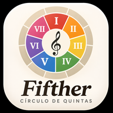
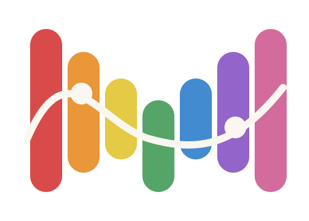
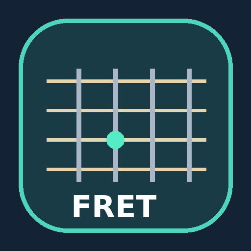

Fifther
Explora las relaciones entre tonalidades, grados y acordes con el círculo de quintas cromático.
Abrir Fifther ↗Repositorio de desarrollo
Comprender la música a través de la interacción
Herramientas musicales
Los enlaces se abren en una nueva pestaña.

Explora las relaciones entre tonalidades, grados y acordes con el círculo de quintas cromático.
Abrir Fifther ↗Repositorio de desarrollo
Comprende y domina el diapasón de la guitarra mediante mapas, ejercicios y evaluación personalizada.
Abrir FretTrainer ↗Repositorio de desarrolloTodos los repositorios · Repositorio del portal
El portal y las aplicaciones se instalan y almacenan por separado. Para utilizar cada herramienta sin conexión, ábrela primero con Internet.